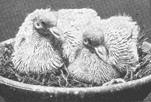
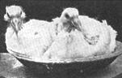
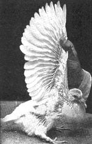

Squabs...
What you’d want to know about squabs before starting your new squab raising project, from the Have-More Plan
By the Mother Earth News editors
March/April 1970
AS we've said we chose geese as our secondary poultry project, and we don't go in seriously for squabs. We thought we should include squab raising in the Plan, however, for those people who would want to raise them, particularly folks who live in the more crowded areas where there are city zoning regulations against chickens and other poultry. There are very few cities or towns that have strict ordinances against keeping pigeons.
In preparing this section about squabs we've visited a number of squab raisers and we've done a good deal of studying and reading. What we tell here is what we'd want to know before we started a new project.
Squab is one of those dishes that are usually thought of as being expensive, delicious and reserved for epicures. You can't even buy squab at most meat markets. Many people haven't so much as tasted this mouth-watering treat.
And yet, if you decide to have another poultry project in addition to chickens, you'll find squabs to be both interesting and delicious. Also, pigeons are among the easiest kinds of poultry to raise, among the surest of success.
They are not really cheap, though, even when you raise your own. They will cost you about half as much to raise as to buy, which means they will cost you about 35 cents to 50 cents apiece, depending on the price of feed at the time and other factors. Still, when you consider that one squab is about all one person can eat at a sitting, and that they are such a treat, the cost isn't so high at that.
Another point to remember is that it is just about as easy to raise twice the number of squab you will want for your own family, as it is to raise barely enough. You can then easily sell the surplus to cover all your costs (first class hotels and restaurants are always in the market for squabs), or you can swap the surplus with neighbors for things they raise and you don't or you can make presents of squabs to friends.
What Size Flock?
First, taking into account the size of your family, decide how many squabs you will probably want in the course of a year. (Squab, incidentally, is defined by the U. S. Dept. of Agriculture as "a young pigeon which is marketed just before it is ready to leave the nest, usually at from 25 to 28 days of age, when it weighs from 12 to 24 ounces.")
One good pair of breeder pigeons should raise 12 to 14 squabs in the course of one year. They may do this at a more or less even production rate throughout the year, but more probably production will be greater in spring and summer than in fall or winter. If you have a quick freezer you can, of course, "even out" production by freezing when there is a surplus.
If you don't have a freezer, then you will probably want to plan to have enough breeders to produce all the squabs you'll need even during the poorer months.
Figuring in this way it will be found that a "loft" of 12 pairs of breeders will probably produce an abundance of squabs for your family.
Housing
Pictured on this page is the type of housing we would suggest. For 12 pairs of breeders the dimensions of the house should be about 6 feet wide and 8 feet deep (48 square feet to allow the 4 square feet of floor space per pair that is needed). It is important that the house should be as rat proof as possible, and, as in the case of chicken housing, that it be dry, well ventilated and facing south for maximum sunlight. Open or semi-closed front may be used, but, as you would expect, the warmer the house in winter the better. A maximum temperature of 40 degrees F. in winter will tend to increase squab production, but you can get along fine without artificial heat.
There should be a double nest for each pair of breeders. Orange crates, with three inch board nailed across front at bottom and a six inch hinged landing board, piled one on top of another will serve for this purpose. Twelve such crates would be needed for a 12 pair house. If you build your own nests, each one should be about 12 inches square and 15 inches high.
Long leaf pine needles, straw, hay and tobacco stems are all used for nesting material. If nest bowls (which can be purchased from supply houses) are used, nesting material is not so necessary but some material is generally provided. The nesting material may be kept in a crate or rack in one corner of the pen to prevent waste. The pigeons will carry the material to build their own nests.
On the south side of the house there should be a wire-covered yard or "fly" as it is called. It can be approximately the same size and shape as the house. One-inch-mesh wire is good to use as it keeps out sparrows and rats. This wire should extend 12 inches into the ground, making a right angle bend at the bottom and extending 12" to 18" away from the pen to keep rats out.
Three to four inches of sand or gravel makes an ideal floor as this drains freely and is cleaned easily. A cement yard sloped to drain well and with one inch of sand is even better. "Running boards" about 8 inches wide should be placed on sides of pen, as illustrated.
Water, Feed and Health
Bathing in addition to drinking water must be provided for pigeons. An ordinary dishpan will serve for bathing and should be filled with water and left in the yard (except on cold winter days) for not over one hour or two a day. Then empty the pan and turn over so that pigeons cannot soil it.
For drinking water, use a regular chicken fountain. The water should be changed daily and the fountain kept clean. Obviously, running water handy to pen is a desirable convenience.
The young squabs are fed by the parents. The pigeons themselves should be fed a ration of whole grains - no mash or green feed. Minerals are fed in a separate mixture. Ordinary chicken feed will not do.
The simplest procedure is to buy a prepared pigeon ration from your grain dealer - and be willing to pay considerably more per pound for it than for chicken feed. It usually pays to buy the better grades offered, because they contain more of the ingredients the pigeons like and which are particularly good for them, such as peas.
A good pigeon feed will contain from 13 to 15 percent protein, 60 to 70 percent carbohydrates, 2 to 5 percent fat, and not over 5 percent fiber. You will find an analysis of the feed you buy tagged to the bag. One pair of breeders will probably eat about 90 to 100 pounds of grain per year.
Use a self-feeder hopper of type illustrated - one that holds feed waste to a minimum. Since pigeons will pick out certain favorite grains it is advisable to put only about one day's supply of grain in the hopper at one time.
At your feed dealer's you can also obtain a prepared pigeon grit, mineral mixture. This should be fed in an open pan or hopper, slightly moist, and kept before the pigeons at all times.
Pigeons are subject to many of the diseases which affect other poultry. However, in a small flock founded on healthy stock and with reasonably careful management, you should have little trouble. The floor of the house should have one inch of sand or gravel, droppings should be raked from house and yard once a week.
Nests and nest bowls should be cleaned whenever squabs are "harvested" - and nests containing eggs or squabs should not be disturbed. Twice a year house and pen should be thoroughly cleaned and disinfected.
Getting Started
You can purchase foundation stock from a pigeon breeder in your community, or order by mail from anywhere in the country. The magazine American Pigeon Journal (15 cents a copy, $1.50 a year, address: Warrenton, Mo.) carries ads of breeders, or consult your county agent or grain dealer.
There are many breeds of pigeons, but the following are the best suited to squab production: King, Carneaux, Swiss Mondaine, Homer, Runt (the largest of all breeds). You can't go wrong by choosing King or Carneaux, because they are both among the most popular breeds and you will probably find it easier to connect with a good breeder, possibly one near you.
It is as important to get good pigeon stock as it is to get good stock for all your other poultry and animal projects. Get your pigeons from a careful breeder who keeps accurate records of the production and weight of his squabs and who guarantees both age and sex.
You will want mated pairs, at least 6 to 8 months old, and yet not too old - not more than two years old. As a rule, it rarely pays to keep breeders more than 5 years. (You can eat your old pigeons, but they aren't as good as the squabs. An old pigeon is worth about 25 cents and can be eaten in pigeon pie.)
After you get your flock established you can raise your own breeders. During April, May and June you will perhaps have more squabs than you need for the table. You can raise some of these and when they are 6 to 8 months old they can be mated. One advantage in raising your own breeders is that they produce better at home where hatched.
But to begin with, you can expect to pay about $3.00 to $5.00 per pair of good breeders. Your best plan for getting good stock at a fair price is to deal with the most reliable breeder you can find. The wise procedure is probably to start with two or three or four pairs of breeders, and then to increase your flock as you go along.
Pigeons usually remain with the same mate for life. Together they rear and feed the squabs. The hen pigeon will lay one egg, skip a day, and lay again. If more than two eggs are laid, remove the extra ones, because a pair of breeders can tend no more than two squabs properly at one time. The incubation period of the eggs is 17 days. Both parents build the nest and take turns sitting on the eggs.
The hen often lays another setting of eggs when the squabs are two or three weeks old and leaves the feeding of the first pair of squabs largely to the male. This is the principal reason why double nests are provided for each pair of breeders.
The parent birds feed the squabs on a thick, creamy mixture called pigeon milk, produced in their crops. Care should always be taken not to frighten pigeons, especially while feeding their young, and squabs should not ever be disturbed more than is necessary.
In case a squab dies during the first week or ten days, another single squab may be placed in the nest, provided the two are about the same size. This gives the pigeons without squabs the opportunity to begin producing again sooner than they would otherwise.
If the parent birds become sick or die, the young birds may be fed by hand if they are at least a week old. They should be fed at least 2 and preferably 3 times a day on grain that has been soaked for about 8 hours. Drop into the squab's mouth - feed enough to fill but not stuff crop.
Harvesting
Squabs grow rapidly and are ready to eat about 26 days old or when fully feathered under the wings. Don't delay in eating them when ready because they will soon lose their baby fat and the flesh will begin to get hard.
To kill, hang squabs by the feet on a hook or nail and cut jugular vein in neck. (The professional way is to cut the vein, with a long, slender-bladed knife, inside the mouth just below base of skull). Lock the wings to keep from flapping, twist one behind the other.
Dry - pick the squabs immediately after killing because the feathers are very hard to pull out if the birds get cold. Pick the squabs on a bench or in your lap - do not hang on a wire. Pick clean and remove pin feathers. Skin is very tender, tears and bruises easily.
As soon as picked, cool for an hour or so in ice water, but not more than three hours. Clean as you would a young chicken. Cookingg the squabs may sound like a problem but it isn't. All cook books give recipes.
Suggested Reading: Making Pigeons Pay - $3.00.
 (Courtesy U. S. Dept Agri.) House is shown with open front. Wood or cardboard partition can be used to close two thirds of opening for winter months. Note that feed trough, water fountain and grit hopper can all be ""serviced"" without entering pen. |
 Squabs 24 hours old. |
 2 weeks old. |
|
 3 weeks old. |
 3 1/2 weeks old - will be ready to eat when fully feathered underwing in another week. |
|